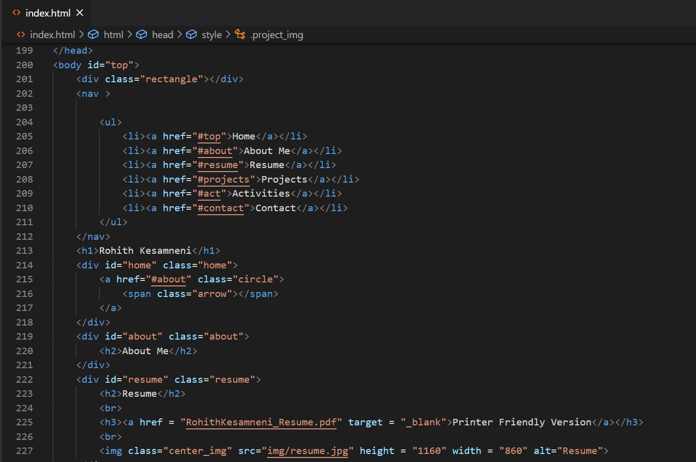
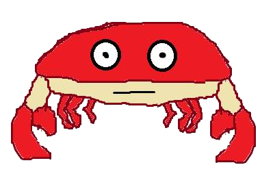

About Me

Who am I?
Hi, I’m Rohith Kesamneni, a University of Michigan class of 2024 Undergraduate with a
passion for computer science.
From building LEGO robots when I was a kid to using different algorithms to decrypt ciphers,
my fascination with computer science has grown into an enthusiasm for engineering the future.
Science Olympiad
Through my eight years with Science Olympiad,
I have been able to explore numerous fields of studies including criminal forensics,
mechanical and electrical engineering, and biology. However, I have always been drawn
to computer related events such as Source Code(python), Codebusters(cryptology), and
Game On(game design). Through Science Olympiad,
I discovered my fascination with computer science, especially with learning new
programming languages.
Tennis
I have been an avid tennis player for nine years and had the opportunity to
play on my high school Varsity team and become a finalist at the State-level tournament.
Tennis is unmatched in exercising both my body and mind,
However, my tennis skills have been a little rusty due to the pandemic,
but I hope to play tennis recreationally at the University next year.
Projects

Accounting Application
Created and enhanced an Accounting desktop application used by a family owned chillies Partnership Firm to track
their sales, expenses, receivable accounts, payable accounts, etc. Additionally, the
application generates year ending financial statements. This
application was developed using Microsoft Access, SQL and VBA scripting.
more >>

EECS280 Projects
Created and enhanced an Accounting desktop application used by a family owned chillies Partnership Firm to track
their sales, expenses, receivable accounts, payable accounts, etc. Additionally, the
application generates year ending financial statements. This
application was developed using Microsoft Access, SQL and VBA scripting.
more >>
Personal Website
Created and enhanced an Accounting desktop application used by a family owned chillies Partnership Firm to track
their sales, expenses, receivable accounts, payable accounts, etc. Additionally, the
application generates year ending financial statements. This
application was developed using Microsoft Access, SQL and VBA scripting.
more >>